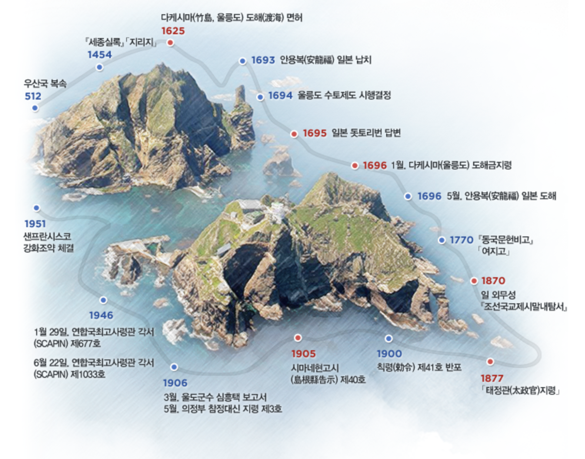
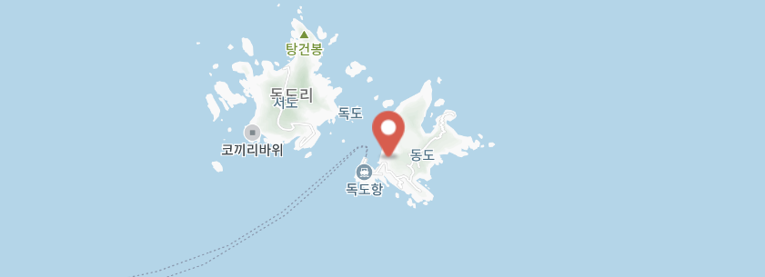

독도는 역사적으로 오랜 기간 동안 우리나라의 영토로 인정받아 왔습니다. 고려 시대부터 문헌에 등장하며, 조선 시대에는 '울릉도와 함께 관리되는 섬'으로 기록되어 있습니다. 이는 독도가 한국 고유의 영토임을 나타내는 중요한 역사적 증거 중 하나입니다.
일제강점기에는 일본에 의해 강제로 점령되었으나, 1945년 광복 이후 다시 한국의 영토로 환원되었습니다. 이후 독도는 한국의 주권과 영토적 자부심의 상징으로 여겨져 왔습니다.
독도는 그 역사적 가치와 더불어 자연환경의 보고로서도 큰 의미를 지닙니다. 독도를 둘러싼 바다는 풍부한 해양 생태계를 유지하고 있으며, 이는 생물학적 연구와 환경 보호의 중요한 대상이 되고 있습니다.
오늘날 독도는 한국인의 애국심을 상징하는 장소이자, 역사적, 환경적 가치를 지닌 중요한 영토로 인식되고 있습니다. 우리는 독도의 가치를 이해하고 보호하는 데 앞장서야 할 책임이 있습니다.
 